500 people vibe-coded for 30 days. I was one of them.
If you only read one thing
- Automattic ran a 30-day 'Radical Speed Month' where two-person teams paused roadmap work to ship projects; roughly 500 people, about a third of the ~1,400-person company, started around 794 projects in the first round.
- The speaker, a product designer with no prior professional coding experience, shipped a design-system status tracker solo in 2.5 weeks and an iOS chat feature in 6 days, aided by a prior 2-week AI enablement course and an internal MCP server (Context AC) exposing the company's documented knowledge.
- Her biggest takeaway: an engineer's impact from enabling non-engineers to contribute can exceed their impact from doing more engineering themselves.
Automattic is a fully distributed, ~1,400-person company behind WordPress.com, Jetpack, WooCommerce, Tumblr, and Beeper. Before Radical Speed Month, the company ran a two-week, role-specific AI enablement course for every employee and built an internal MCP server (Context AC) that gives AI tools access to years of documented institutional knowledge.
“We are around 1,400 people and we're fully distributed which is pretty interesting for also what what”
▶ watch at 00:30“Then the AI enablement was initiated where every single employee goes through a two-week course designed specifically for their role”
▶ watch at 03:05“an incredibly helpful tool that I that I use every day for research and planning is context AC. It's an MCP server that gives AI tools access to all of the knowledge and data”
▶ watch at 03:36
The 30-day initiative paired employees to pause roadmap work and ship real projects with full autonomy, rolled out in stages. In the first round, about a third of the company (~500 people) participated and started around 794 projects.
“we had about a third of the company participating in the first round. That's around 500 people that started around 794 projects in these 30 days”
▶ watch at 04:40
The speaker's second project, a design-system status tracker pulling from GitHub, Storybook, and Figma, had a three-person discovery phase but was designed and built by her alone in about 2.5 weeks. Her third project, an iOS chat feature for WooCommerce merchants with WordPress.com authentication and an AI-answering agent, went from zero to a working proof of concept in 6 days with a fellow designer.
“the discovery portion was three people, but the design and build was just myself. And it took around 2 and 1/2 weeks to build this”
▶ watch at 10:55“In only 6 days, we went from zero to uh through the entire process to building an iOS chat for WooCommerce merchants that um allows them to answer shoppers in real time”
▶ watch at 13:32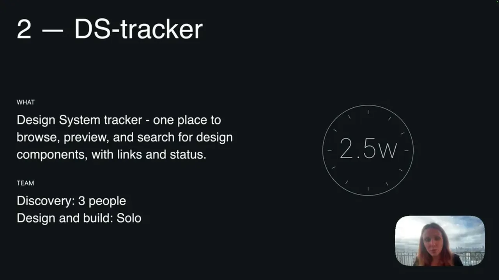
Normally her process started and stayed in Figma until high fidelity. On the third project, the team instead planned, then built a working prototype directly, and only returned to Figma afterward for visual fine-tuning and a mood board -- a process inversion she has continued in her daily work.
“we had uh, very good plan. Then we um, built the the the prototype or the product and then we went back into Figma to just come back to it in a visual sense to build a mood board”
▶ watch at 15:36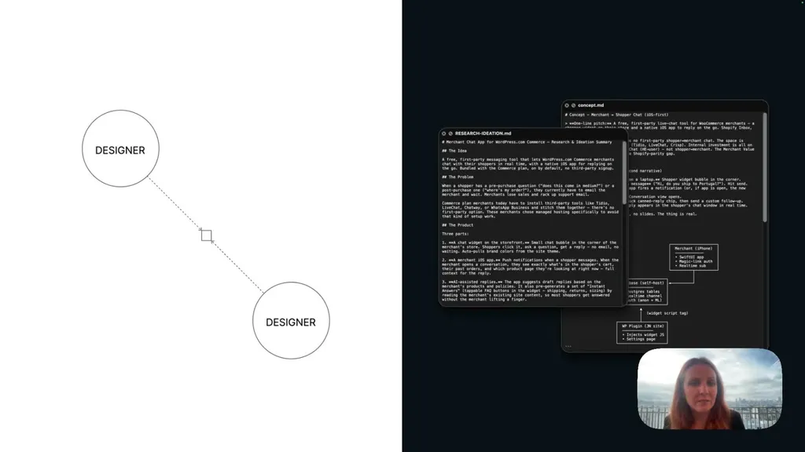
Her top takeaway from the first project was that an engineer's impact from enabling teammates to contribute can exceed the impact of doing more engineering personally. Her advice for replicating this at large-organization scale: give people access to the tools, identify enablers and champions, create space for experimentation, and give people the agency to break out of established habits.
“if you're an engineer, the impact that you have when you enable others may be far greater than the impact of doing more engineering yourself”
▶ watch at 08:52“So, provide your people with the access to the new tools, find your enablers and champions, create space for experimentation, and and give them agency so that they can”
▶ watch at 17:09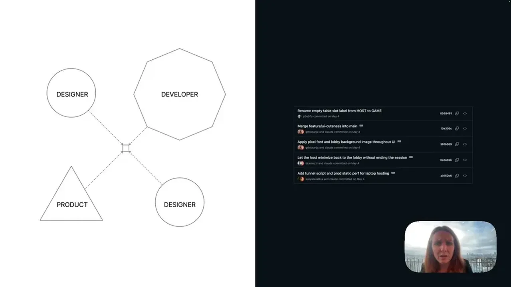
Commentary (ours)
The 794-projects-in-30-days figure is a useful benchmark for what 'give people agency plus AI tools' produces at scale, but the talk doesn't report how many of those projects survived past the month or made it into production -- that follow-through number would be the real test of whether this generalizes beyond a novelty sprint (ours).


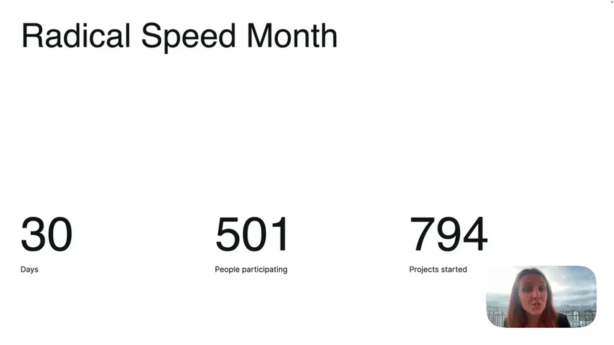
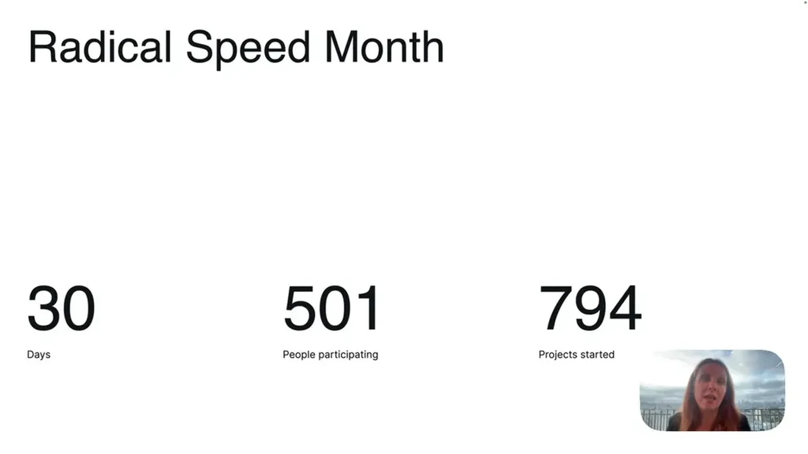
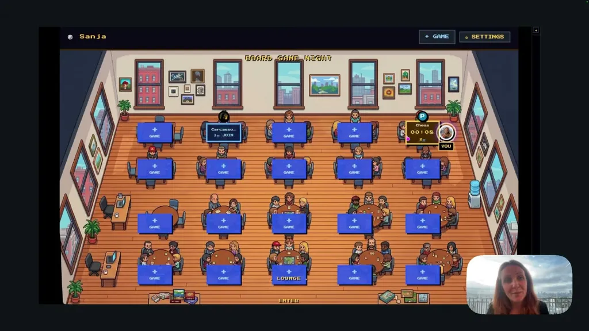
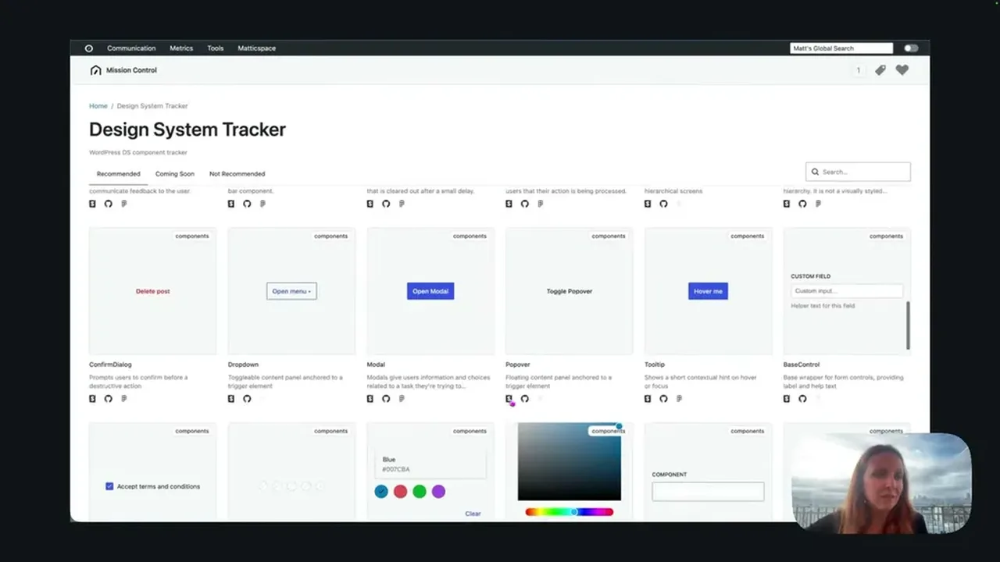
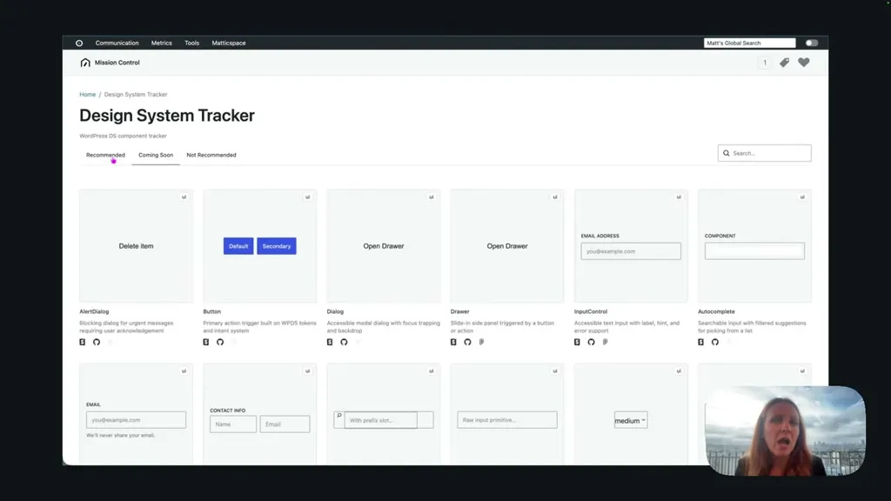
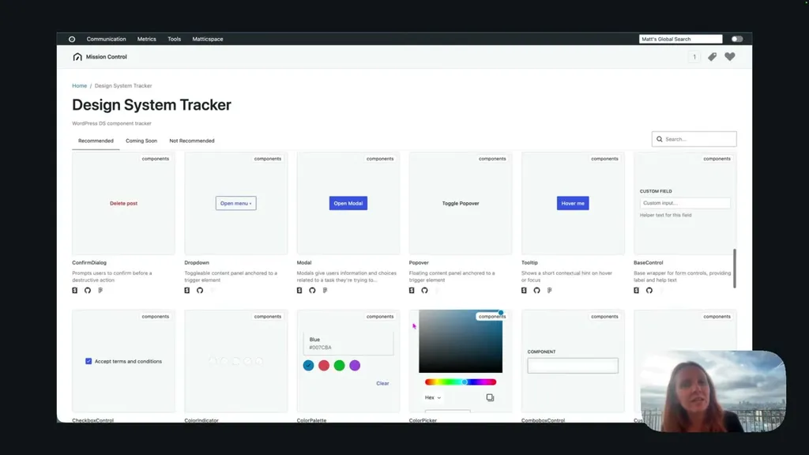
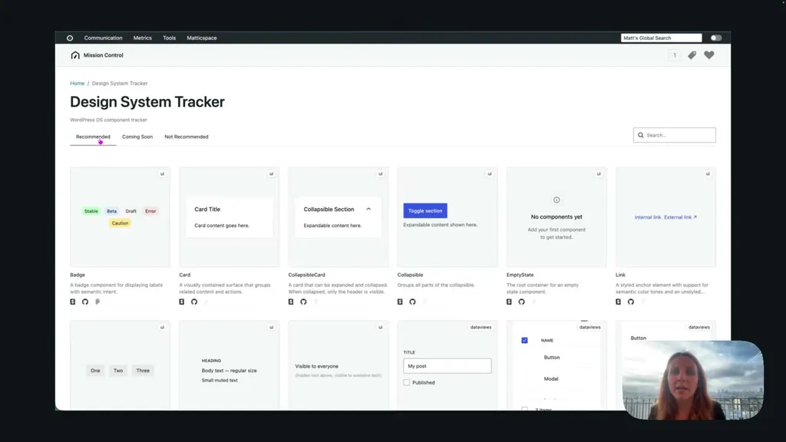
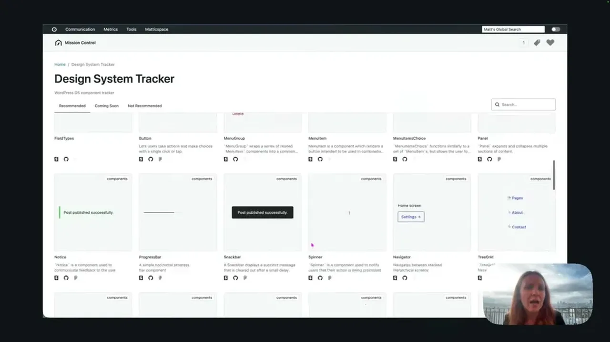
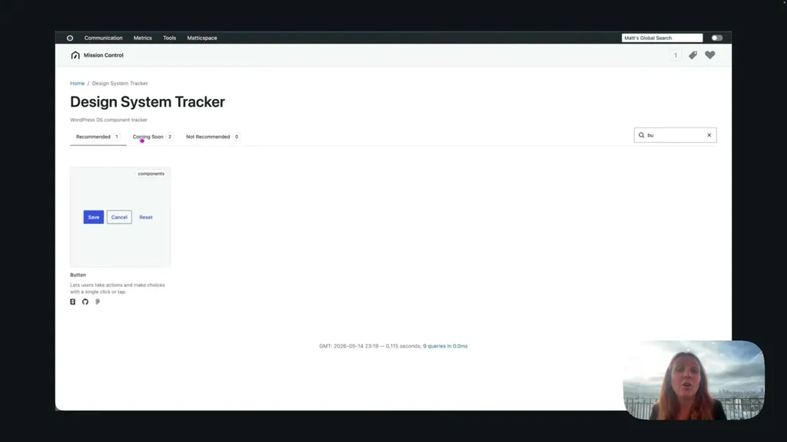
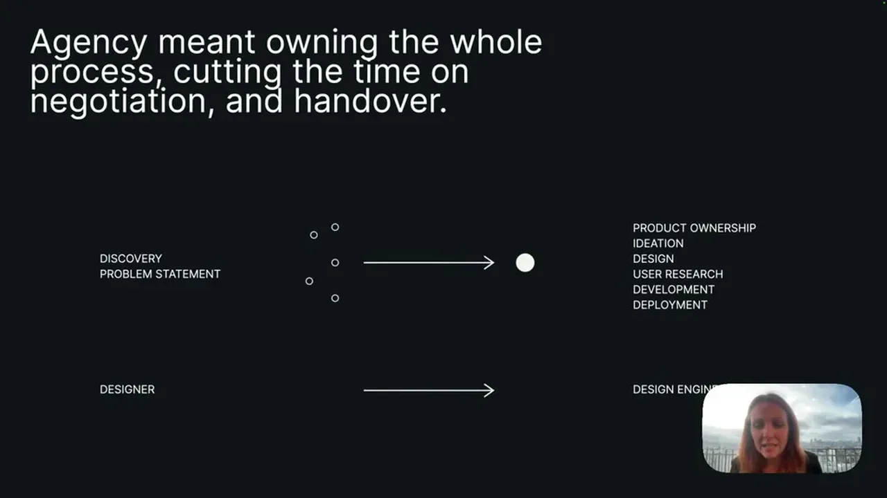
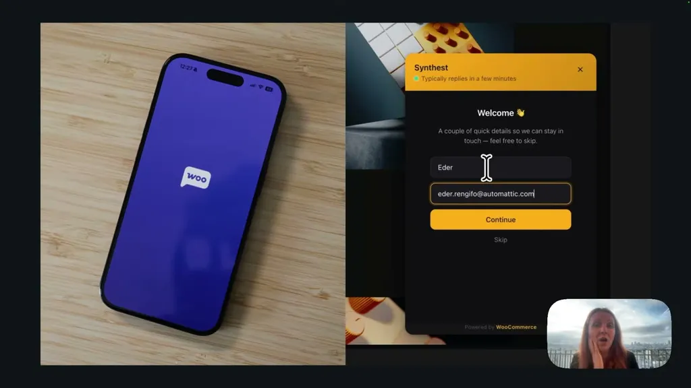
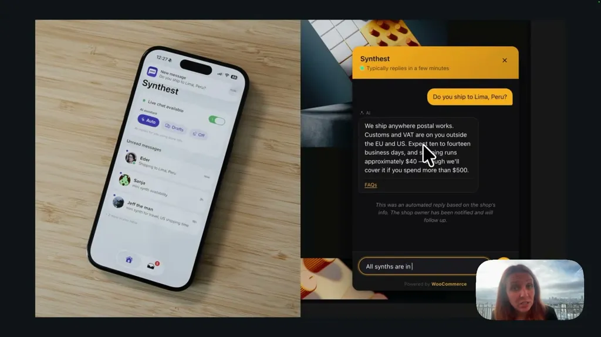
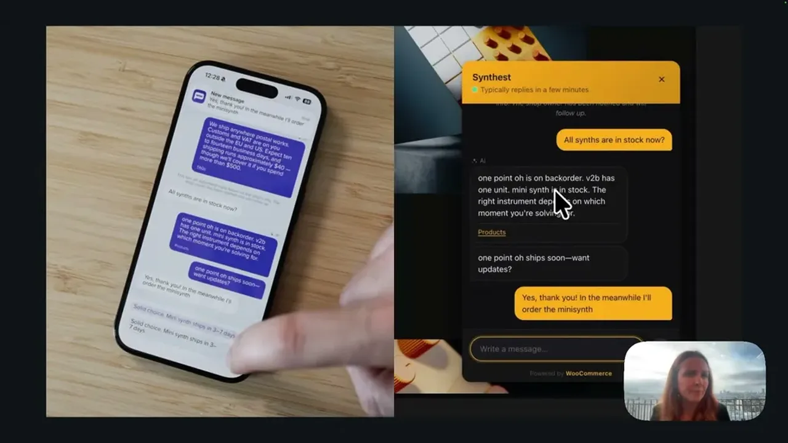
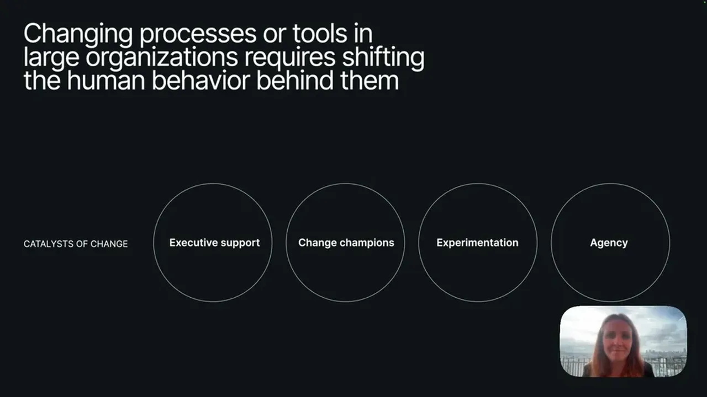
Underlying detail — every claim, typed and timestamped (9)
| Stance | Claim | t |
|---|---|---|
| asserts | Automattic is a fully distributed company of around 1,400 people. | 00:30 |
| asserts | Automattic runs a two-week, role-specific AI enablement course for every employee. | 03:05 |
| asserts | Automattic built an internal MCP server, Context AC, giving AI tools access to years of documented company knowledge. | 03:36 |
| asserts | In the first round of Radical Speed Month, about a third of the company (roughly 500 people) started around 794 projects in 30 days. | 04:40 |
| asserts | The speaker's design-system status tracker had a three-person discovery phase but was designed and built solo in about 2.5 weeks. | 10:55 |
| asserts | An iOS chat feature for WooCommerce merchants went from zero to a fully working proof of concept in 6 days. | 13:32 |
| recommends | An engineer's impact from enabling non-engineers to contribute may exceed the impact of doing more engineering themselves. | 08:52 |
| asserts | The team's process inverted from Figma-first to plan-then-prototype, returning to Figma only afterward for visual fine-tuning. | 15:36 |
| recommends | Large organizations replicating this should provide tool access, identify enablers and champions, create space for experimentation, and give people agency. | 17:09 |
Machine-readable copy embedded in this page (script#ontology) and in the corpus ontology.